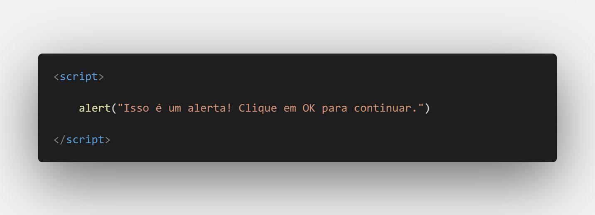
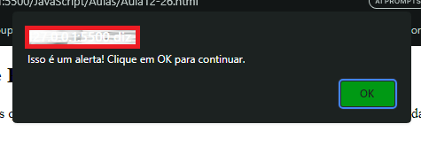
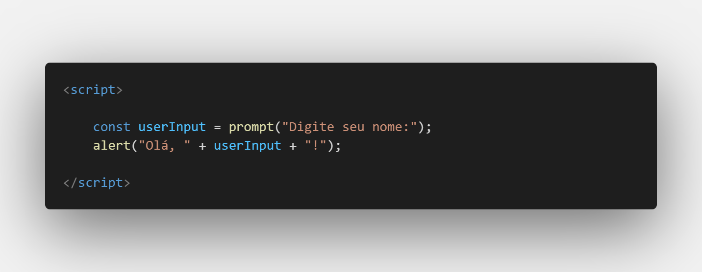
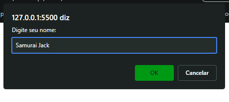
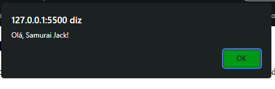
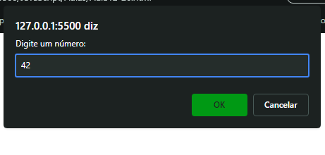
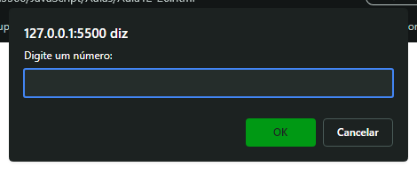
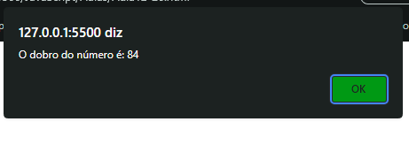

Aula 12/26 - Alert e Prompt
alert e prompt são duas funções que interagem com o usuário exibindo caixas de diálogo. Vamos ver cada uma delas em detalhes:
1º Alert
A função alert é usada para exibir uma caixa de diálogo de alerta no navegador. Ela exibe uma mensagem para o usuário e aguarda até que o usuário clique no botão "OK" para fechar a caixa de diálogo. O alert é útil para exibir informações importantes ou mensagens de aviso para o usuário.
Exemplo:


2º prompt
A função prompt é usada para exibir uma caixa de diálogo que permite ao usuário inserir um valor. Ela exibe uma mensagem para o usuário, geralmente uma pergunta ou uma instrução, e fornece um campo de entrada de texto para o usuário digitar uma resposta. O valor inserido pelo usuário é então retornado como uma string.
Exemplo:



Lembre-se de que o valor retornado pelo prompt será sempre uma string, mesmo que o usuário insira um número. Se você deseja usar o valor como número, precisará convertê-lo usando parseInt ou parseFloat.
Exemplo de conversão de entrada para número:



Em resumo, alert é usado para exibir mensagens de alerta simples para o usuário, enquanto prompt é usado para obter entrada do usuário por meio de uma caixa de diálogo. Ambas as funções são úteis para interagir com os usuários de maneira simples em aplicações web.